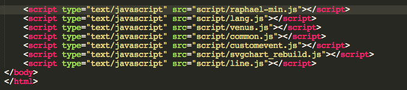
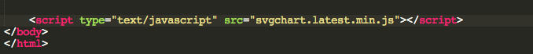
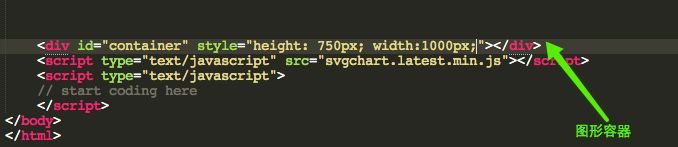
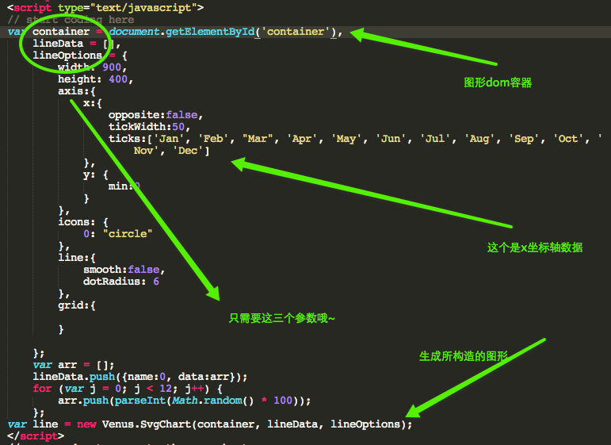
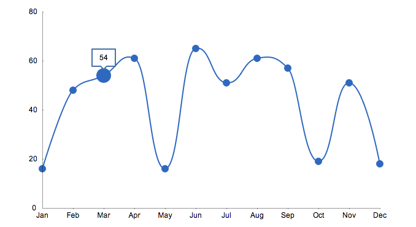

第一步：下载并添加所需js文件到你的html代码中
（1）确认你下载的js文件含有如下：
- raphael-min.js
- venus.js
- lang.js
- common.js
- customevent.js
- svgchart_rebuild.js
- line.js（或者bar.js、pie.js、dot.js中的一个或多个）
注意：如果你下载的是完整的打包文件，你只需svgchart.latest.min.js单独一个文件即可。
（2）添加确认的js文件到html页面，如下图所示:

或者如下：

第二步：准备好图形容器，数据和配置参数（我们以线图为例）
（1）在引入的所依赖的js文件后面添加自己的script标签
（2）准备好图形显示的div块，如图：

（3）coding图形生成代码，如图：

